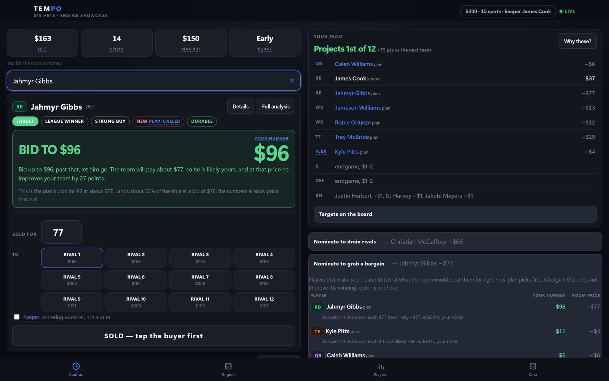
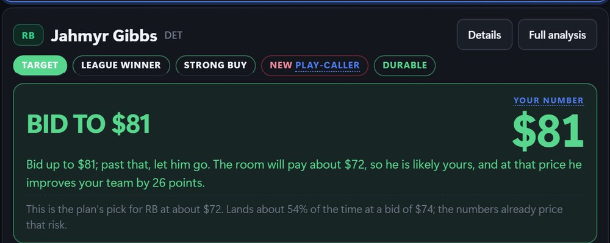
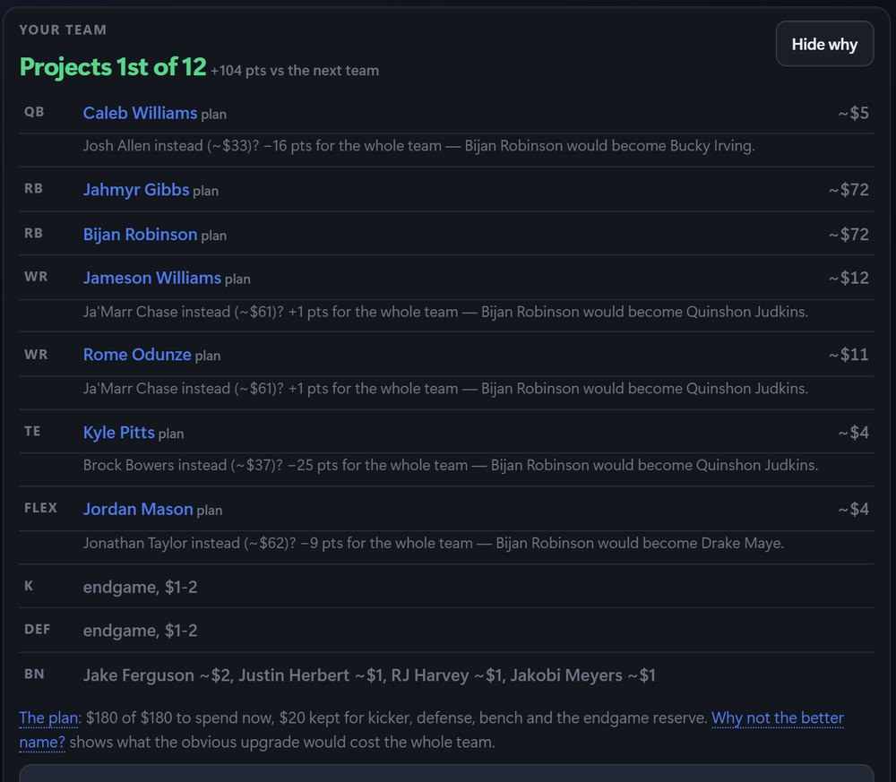
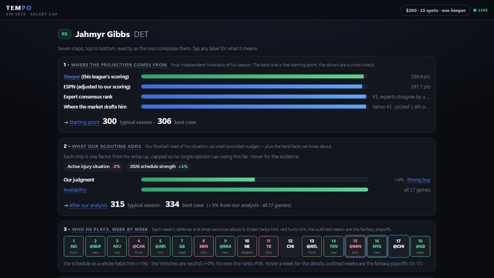
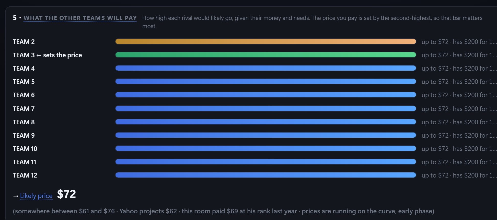
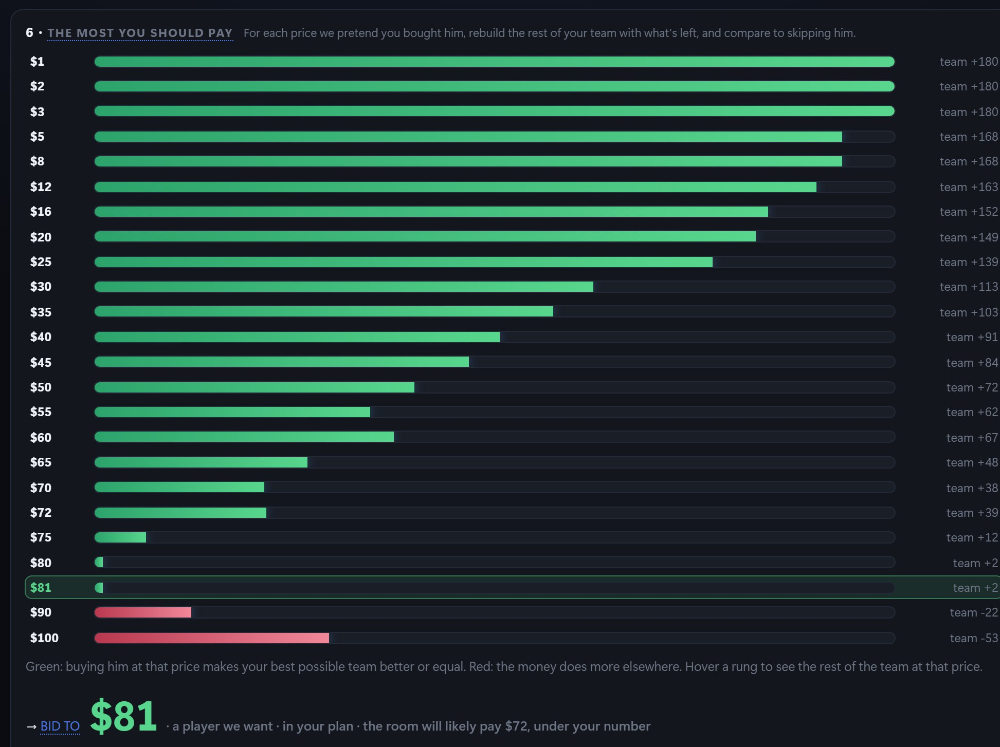
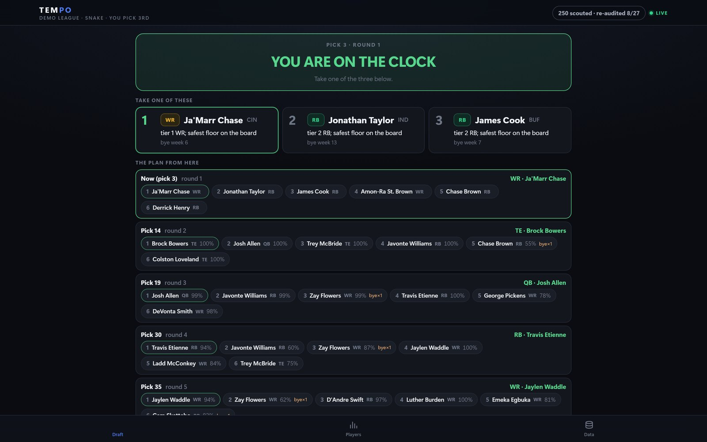
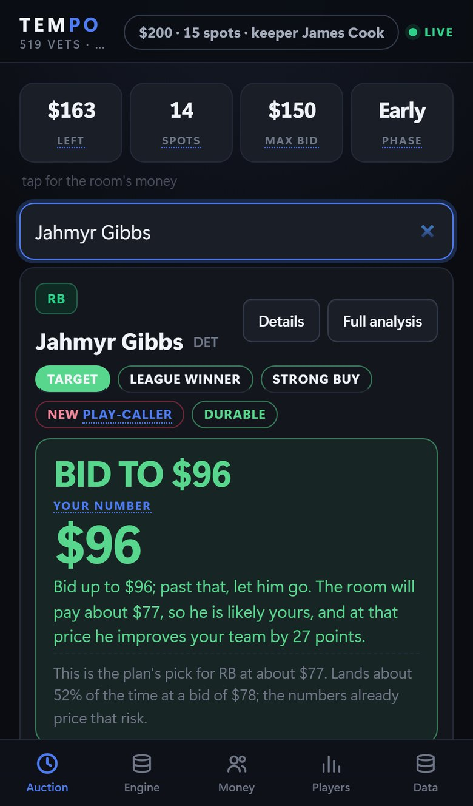
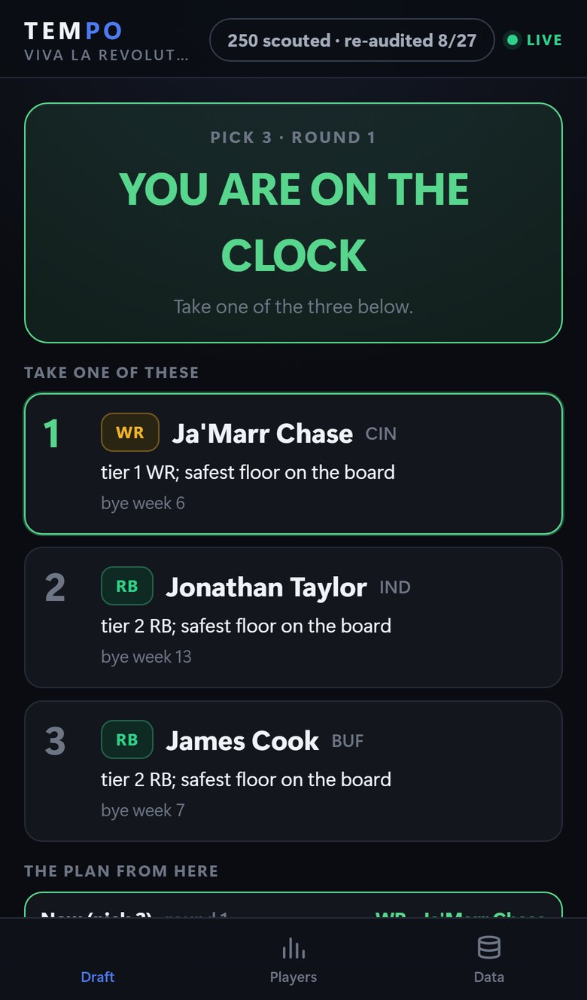

Decision tool · Python + JavaScript · 2026 season
TEMPO. One number per player, and the reasons behind it, while the clock runs.
A fantasy-football auction moves about $2,400 across a table in three hours, and you get roughly ten seconds per player to decide whether the room's price is a good one. A cheat sheet gives you a projection times a constant. TEMPO's number is different: it is built from four projection systems, two seasons of play-by-play, cited research on 250 players and the room's own bidding history, then re-solved for your roster after every sale. I built it for my own leagues and ran it in four real drafts this season. The screens below are from a demonstration league with generic team names; the results section is from the real rooms.
The card: what you look at when a player is nominated



How the number is made
Every price on the card is the last line of a seven-step trace, and the Engine tab shows that trace for whoever is nominated. Nothing on it is computed differently from the card. Here it is for one running back, top to bottom.

1Where the projection comes from
Four independent forecasts of his season, shown side by side. The best one is the starting point and the others are a cross-check. The first source already scores in this league's own rules. The second is a stat-line projection re-scored into them. The third is where several hundred experts rank him, with how much they disagree. The fourth is where the market actually drafts him. Players no projection covers still get a number, through a points-by-rank curve fitted per position from the players who do.
The typical season and the best case are two different numbers on purpose. The gap between them comes from how much the experts disagree about him, converted into points. A player everyone agrees on gets a narrow band; a player the experts split on gets a wide one.
2What the research adds
Each chip is one fact from his research file, turned into a small bounded nudge: an active injury, a new play-caller, the schedule, week-to-week volatility, durability from his age and the games he has missed. No single chip can move him more than a few percent, and the whole layer is capped, because a rules layer confident enough to move a player forty percent would be inventing precision.
Behind the chips is a written verdict per player: buy, hold, fade or avoid, with a thesis and the facts that would change it. Each fact carries the field it came from and that field carries its source, so the chain from the stance on the card back to the article it rests on is unbroken. This layer runs as plain rules over structured fields. No language model runs on draft night, and any of it can be re-derived by hand.
3Who he plays, week by week
Every opponent on his schedule, coloured by what that defense allowed to his position slot over the last two seasons, with the facts the engine knows about it: a shadow corner, a new coordinator, a lost starter, a blitz-heavy front. The outlined weeks are the fantasy playoffs, and the best-case number weights them more, because in a league that pays only for first place the ceiling that matters is the ceiling in December.
Two honesty rules keep this layer small. Defense quality is noisy year to year, so it is shrunk hard toward average, harder still where the coordinator changed. And a second layer prices the mechanism rather than the outcome: his own offensive line against each week's defensive front, so a bad line facing an elite pass rush compounds and a great line neutralises it.
4Turning points into a price
His season points are a ceiling-weighted blend of the typical season and the best case, then averaged half and half with the consensus view of him. That half weight was not a taste: dry runs graded both ways chose it. Subtract the points of the last player who would still start at his position, and you have what he adds. Multiply by what a point costs in this room right now, which is the money still on the table divided by the points still available, and you have his fair price. His value to your team is higher than his fair price when your roster needs him more than an average roster would.
The replacement level is flex-aware. Running backs, receivers and tight ends compete for the same flex slots, so the engine works out which positions actually fill them before it decides who the last starter is.

5What the other teams will pay
The room is modelled, not assumed. For the auction TEMPO was built for, the price model is that room's own auction from the year before, all of its sales: what it paid at each market rank, how much it overpays receivers and underpays quarterbacks, and how quickly its money leaves. Each rival's ceiling is that price tilted by what the rival still needs and capped by what it can still afford. The price you pay is set by the second-highest ceiling, so that bar matters most.
As the night goes on, every sale is compared with what the model predicted for it at the time. The room's bias and spread are re-estimated from those residuals and shrunk toward the prior, so a room that runs hot moves every remaining prediction up within a few sales, and a room with no history starts from a consensus curve and learns the same way. The band under the likely price is that learned spread.

6The most you should pay
This is the step nothing static can do. For each price on the ladder the engine pretends you bought him at that price, rebuilds the best roster you can still afford with what is left, at what each remaining player is predicted to cost, and compares it with the best roster you could build by skipping him. The rebuild is a budget optimisation over your open slots, with kicker, defense and bench held at tail prices plus a cushion. Your number is the highest price at which the roster with him still beats the roster without him. Because the rest of the roster is re-planned at every rung, the number already accounts for the cheaper alternative at his position and for what his money would have bought elsewhere.
Unspent money is worthless at the end of the night, so when your remaining money exceeds what your plan can spend at predicted prices, every number on your card rises. When it is the reverse, they fall.
7Where everyone stands
Every team's roster as it stands, with its empty starter slots filled at what its remaining money can still buy, against yours plus your plan. It is the same objective every other number uses: total starting-lineup points, ceiling-weighted. It is also the check on the whole model. If the projected finish does not move when you buy someone, the number that told you to buy was wrong.
What goes in
| Projections | Two independent season projection systems, one already in this league's scoring, one re-scored into it from its stat lines. |
|---|---|
| Experts and market | Expert consensus rank with each player's spread of expert opinion; average draft position from two markets; the platform's own rank list, which its autopick follows. |
| Two seasons of play-by-play | Per-player usage, snap share, games missed and league-scored points for 2024 and 2025; per-team pace, pass rate over expected and red-zone tendencies. |
| What defenses allow | Fantasy points allowed by every defense to every position slot, scored in this league's rules from raw components, plus the 2026 schedule grid. |
| The trenches | Offensive line and defensive front metrics from play-by-play joined with charting data on blitz rates and sack attribution, blended with a forward-looking 2026 line ranking. |
| Coaching and context | 2026 head coach and both coordinators for all 32 teams, parsed from the source tables rather than a summary; shadow corners, scheme changes and personnel moves, each with a citation. |
| Research files | A dossier per player on 250 players: role, depth chart, competition, contract, and injury status with a date and a source. A written verdict per player synthesised from the dossier. |
| The room | For the auction it was built for, that room's own prior-year auction, every sale. For rooms with no history, a synthetic market from consensus value at the room's roster settings. |
Snake mode: on the clock, with the plan from here

The availability numbers come from thousands of simulated drafts. Each rival is modelled as a follower of the platform's own rank list plus noise that grows with pick depth, plus run contagion when a position has just been picked several times in a row, plus a tendency tag such as quarterback-early or homer. The recommendation multiplies each candidate's ceiling value over replacement by how likely he is to be gone before your next turn and by how badly your roster needs the position, then applies hard rules that are never traded off. Tiers are found by a Gaussian mixture per position on league-scored points, because plain clustering spent all its resolution subdividing the replacement-level tail.


What happened in the actual rooms
Yahoo · $200 · Sep 7
Sleeper · Sep 6
Sleeper · 2 lives · Sep 5
Yahoo · Aug 26
How it is built
- Python engine, deterministic end to end: the same inputs always produce the same card, and every intermediate value is exposed on the Engine tab. No language model runs at draft time; the research layer is rules over structured, cited fields.
- Every adjustment is bounded and every bound is written down with its reason. The research layer nudges the market blend; it does not replace it.
- Flask server with server-sent events; a single-file JavaScript front end; every sale journaled append-only with the prediction that stood at the time, so a restart rebuilds the state, any entry can be undone, and the room calibration never uses a reconstructed number.
- Replaying the prior year's auction through the price model reconciles every team's spending to the dollar, and the $1 to $3 tail predicts within sixty cents.
- Verification before each draft: scripted dry runs through the live server and page across a grid of room behaviours, seeds recorded, invariants checked, then a hindsight grader that scores the final roster against the best roster the room's prices allowed. A facade audit confirms every research field the engine claims to read actually moves a number.
TEMPO runs on the draft-night network and is not a public app. A live demo on a demonstration league is available on request.